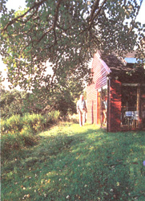

Home Landscaping
If you want to add value to your home, skip the family room addition or the vinyl siding. Plant a tree instead.
By Mort Mather
August/September 1999
I confess that I was being cruel when I asked the local businessman if his insurance would cover the $10,000 loss he had just incurred. "What loss?" he quickly asked. "Why the loss of those beautiful old trees that fronted your property," I replied.
He had purchased a lovely old house that sat on a slight rise about 100 feet back from a busy road. The maples he'd cut down had arched over the road and over his front lawn. They'd shaded the house from the afternoon sun in the summer and let the rays shine through in the winter They'd provided a visual screen, as well as a sound barrier from the road for the second story rooms in the summer when the road was busiest. They'd probably improved the air quality, too. Plus, they'd made the whole property more attractive.
His view of these trees was somewhat different. He was turning the house into a business. He wanted people to see the business. And from a business point of view, maybe he was right.
What's certain is that removing those trees changed the look of the road and buildings in the vicinity for a long, long time. Even if the trees are replanted, the chance they will be allowed to grow to the same majesty are slim. Their foliage rose above the utility wires, where it was allowed to branch out naturally. Young trees reaching wire height will be trimmed in unattractive shapes to accommodate power and phone lines.
Why Landscape?
There are plenty of good reasons - aesthetic, economical and ecological - to manipulate, or landscape, the grounds around our home or business:
• To raise the value of our property.
• To make our home more environmentally sound, thereby decreasing annual heating and cooling costs.
• To provide a good living environment.
• To make our home or business attractive both to us and to others.
Chances are you will not strike oil, find gold or dig up a pirate's treasure on your property. Still, a little digging and a small investment can bring great returns. If you spend $50 on a savings bond today, it will be worth less than $150 in 20 years. If you plant a $50 tree on your property today, it will likely add $3,000 to the value of your property over the same period of time. Just like other investments, it must be done wisely and there is no guarantee that past performance will indicate future return, but landscaping will certainly increase the aesthetics and ultimate value of your home.
Making our homes more environmentally sound through landscaping can save us money every year. Do we want the sun beating down on the house sometimes, all the time or never? If never, surround it with evergreens. If in winter but not summer, plant deciduous trees. If in morning but not afternoon, plant on the west but not the east. If the winter wind sucks the heat out of your house, a strategically placed windbreak of trees or shrubs will have a positive effect on the heating bills. A screen of trees and shrubs can also muffle noise and improve air quality.
We want our grounds to provide a good living environment. It is an environment we pass through a couple of times a day or more as we come and go. We probably want to spend some time just sitting in this self-made environment. It's what we see every time we look out our windows. If there is a long view from our property, we probably want to keep it open or perhaps to frame it. Or we may want to close off the long view and create a new view of our own.
It is important for most businesses to be attractive to other people. The public face we put on our homes, on the other hand, is more a matter of individual preference. Still, the way we present our homes to public view will, inevitably, reflect something about ourselves. The best clue as to how your home should look to passers-by is how well it will fit in with the neighborhood. If your vision is vastly different from your neighbors, you are probably in the wrong neighborhood.
Which brings us back to increasing the value of your property. Creating an anomaly in a neighborhood will not increase value. If all the houses on your block have neat lawns and you put in a rock garden with a waterfall, your neighbors will talk and potential buyers will in the future shy away. Consider the same neighborhood with no trees. The right tree, well placed, would probably increase the value of the property.
Assessment
Landscaping begins with an assessment of what is already there. Make a diagram of the area. If it is a house lot, the boundaries are set and easily measured to prepare a scale drawing. Our house is 20 feet from the road and otherwise essentially unrestricted by lot lines. The "landscaped" area covers about 100 feet in one direction, which includes the vegetable garden, 50 feet in the other, which includes our parking area, and 25 feet at the back of the house.
What already exists on your land? Draw in buildings, driveways, walkways, utility poles, trees and shrubs. Is the contour of the land going to be a factor in planning? Check out the air space. Are there any wires? Note them on the plan. Are there any shadows cast from trees or buildings on neighboring properties?
What is the soil like? A new house is likely to be surrounded by porous fill covered with an inch of topsoil. Ledge outcroppings or lots of rocks may cry out for a rock garden, while clay might suggest a small pond. A weeping willow will thrive in a soggy soil and actually soak up much of the moisture. A well-drained sandy soil may realistically be limited to desert type plants. The range of plants that can be grown in any soil is widened with the incorporation of organic matter and its decomposed end product, humus. Humus soaks up moisture for release when plants need it. It creates spaces between the tiny particles of clay and fills in the spaces between the larger particles of sand. Whatever type of soil you have, it can be improved. However, give consideration to what is there because working with what you have rather than trying to impose your will is easier, and I always think that easier is better.
Finally, test the soil for pH (acidity/alkalinity) and nutrients. The soil nutrients and pH can be changed, but to do so we need to know where we're starting.
Research
The best research is done by traveling around your neighborhood. What houses do you find most attractive and why? What plants are growing there? If you see a tree or shrub that you particularly like, make note of it. Does it look good at other times of the year? There is no better test for whether or not something will thrive in your climate than to see a mature plant growing in your neighborhood.
Unfortunately, we can't define "neighborhood" for you. When you grow plants that are close to the line for your area the difference may be across the road. Something may grow on the east side of your neighbor's house and not survive on the west side of yours. Our forsythia suffers scraggly blossoms close to the ground, yet five miles away - five miles closer to the coast - the same flower blooms beautifully.
When I was doing my research, I also got books on landscaping from the library, but most of what they had to offer was too formal, too well planned or too much work. Still, there were two thoughts that I really liked: 1) you should be able to walk around your house and 2) wherever possible, avoid foundation plantings.
Vision
Once you know what you've got and you have some basics to help guide you, it is time to work on a vision for what your landscaped grounds will look like. You might want to make a copy of your diagram so you have a clean base drawing to go back to if needed. There are computer programs that can be used for an exercise of this type, but I prefer the drawing board. When manipulating the floor plan of a kitchen, there are pieces of known size like the stove and refrigerator. These can be cut out to scale, along with counters and tables and chairs, and moved around on the kitchen floor diagram. That doesn't work so well in landscaping because we can always find a plant to fit into any space, while others will overlap. The vertical picture is much more important.
A landscape architect may be a good investment. Having never used one, I can't say either way, but certainly an expert would never have let me plant the pine so close to the house or the sugar maple under the utility lines or the apple so close to the road or the spruce where they would ultimately shade the garden. Still, I have never aspired to perfection. In the end, the pine was cut down. The spruce that were supposed to be Christmas trees were left to grow and only two were used as originally planned. It doesn't bother me that the road crew prunes my apple tree, on one side anyway, or that the utility people have shaped the maple into something that looks like a very large magnifying glass.
Foresight
There is one mistake I made that I wish I had realized 20 years earlier. We have a wonderful shade tree that we planted the first year we lived in this house. It was given to us by friends who told us it was a silver maple. The leaves were not quite maple shaped, nor was the bark what one would expect. A few years ago friends told us it was a silver poplar. I knew immediately that they were right. Poplars are fast-growing trees and we have greatly appreciated the shade of this one for over 20 years. Poplars are also short-lived trees and when they reach maturity they send out underground root-like stems, which send up new trees. These are sent 20 or more feet beyond the tree's drip line. Once the new growth is established, the old tree dies.
This has presented several problems, the least of which is that we will have to dispose of the tree when it dies and it is too close to the house for me to do it myself. Its progeny keep popping up in the garden and the rhizomes are tough and thick, creating extra work for us when we go to turn the soil in the spring. The worst problem is that we will lose our shade tree. If I had it to do over, I would still have planted the silver poplar because it has given us much pleasure and it grows fast. However, I would have planted a slower growing shade tree at the same time, so that it would have reached maturity and be shading the house by the time the poplar had to go.
Trees
I do have a replacement shade tree growing now-an elm. You may think me crazy, but this elm is supposed to be immune to Dutch elm disease. What if it isn't? Good question! The elm is planted farther away than the poplar. Genetically it is a taller tree, but it's got a ways to grow yet. As soon as the poplar dies and is removed, I will plant a maple in its place. If the elm dies, I'll still have the maple. Maybe the maple will run into some disease or other problem sometime in the future and the elm will survive. It is always wise to have some diversity.
If you are planting a windbreak, plant it much farther away from the area you want to be calmed than you would think. When you think of wind, think of the vacuum on the leeward side of your house. That is what causes the wind to make the house cold in winter. It is not the wind blasting up against the windward side but the vacuum created on the other side of the house that sucks air into the house. A windbreak should cause a vacuum between itself and the house. If it is too close, the wind whips over the windbreak and the house as one unit. The same is true for gardens that need a windbreak.
Besides shade and protection from the wind, trees can provide a direct source of income. Black walnut trees - highly prized by furniture and cabinet makers - have sold for as much as $90,000. And there are some new strains of black walnut that reach maturity in 35 years. But since there's lots of these trees growing now, they won't be bringing in that top-dollar again in the foreseeable future. Fruit trees will start producing fruit in less than five years and are also good for attracting bees to your property.
But trees can have some negatives, too. Black walnut poisons the ground for some plants up to 80 feet from the trunk. You wouldn't want one near your vegetable garden, as tomatoes and potatoes are among the plants that cannot survive in the vicinity. Fruit trees drop fruit on the ground in the fall, which, if you are a neat freak, you'll want to pick up. A mature oak drops acorns. All deciduous trees drop leaves. Conifers drop cones and needles. Plus, there's a limit to the things that will grow in the shade of trees.
Shrubs
A little closer to earth in our vertical dimension is a wide variety of shrubs. Some shrubs grow taller than some trees and some grow so close to the ground they can be considered ground cover. Most can be shaped into anything you want them to be-from poodles to whales to two-dimensional shapes against a wall. They can provide food for birds in winter and nesting sites in spring. They can overwhelm you with their fragrance and dazzle you with their colors. Some can thrive in the shade, while others will withstand the salt spray from the ocean (or winter roads).
Shrubs are the most versatile plants in the vertical landscape. They can hide the electric meter or break up an unattractive line. They can frame a driveway, make an impressive entrance, guide the eye to an attractive view or visitors to the front door. But they can also clutter your plan and make it difficult for you to move around your property. That is why you want to keep going back to the two-dimensional diagram and sketch in the size of the mature plants. You want to make sure you'll have plenty of open space to move around in and enjoy. Also, you'll probably want some space for flower, herb or vegetable gardens.
If I had an ugly foundation, I would most likely want to hide it behind some shrubs. If you don't have anything to hide, consider keeping the line where the house meets the earth uncluttered. This clear area is helpful in keeping critters out of the house. Without shrubs there, a mouse or chipmunk trying to find a way in will be exposed to predators. Foundation plantings give them cover.
Also, be careful with exotics - shrubs and other plants that are not native or don't have a long history in the area. Forsythia and lilacs have graced homes in our area for centuries. Anytime we see one growing seemingly in the wild, we can be sure there was once a house there. These plants are never going to escape into the wild and destroy wildlife habitat.
On the other hand, it is incredible to me that barberry is still allowed to be sold. The birds eat the berries and deposit the seeds in the wild. I know of one natural area where the understory has been completely overrun with barberry and where it is taking over fields as well. This is largely because of a sizable deer herd. The deer eat everything but the thorny barberry, wiping out the competition. Now the change in habitat is stressing the deer herd as they search for winter feed.
Ground Cover
Next we move to ground level and the two dimensions of the paper plot. Remember that I consider myself to be a lazy gardener. The laziest ground cover is to leave it natural. No matter what the soil surface, something will grow there. That something as provided by nature will probably be a combination of plants, grasses, weeds, maybe moss, mushrooms, whatever. The natural ground cover can be changed into a lawn relatively quickly with regular mowing, or it can be changed somewhat slowly by mowing once or twice a year. But consider it in its natural state before doing anything much.
Unmowed natural cover comes to within four feet of one side of our house. Admittedly it is the back of the house, but it is right outside the windows we look out most often. It is also the view presented to our guests. When we sit outside, we sit on lawn within four feet of unkempt natural cover.
Our wild garden provides us with year-round pleasure. We have planted daffodils on the near bank and a patch of irises a bit farther away. These plantings don't need any attention. Had the daffodils been planted in a bed, we would have to cultivate, and if in the lawn, we'd have to mow around them. In the wild they provide us with a dazzling patch of yellow before the first dandelions. When the flowers are gone, the leaves compete well with the surrounding grasses and weeds and continue to gather enough sunlight to keep healthy.
The wildflowers grow and change through the summer, and when the grasses go to seed they provide more beautiful, delicate shapes and colors to contrast with the deep greens behind them. Queen Anne's lace is one of the more prolific flowers. Sometimes we ignore a perfectly beautiful wild thing because it is so common. Look closely at Queen Anne's lace. Is it not as beautiful as any snowflake? Birds eat the seeds and in winter the dried blossoms pile up with snow and appear a fairy wonderland.
Suffice it to say that beauty is truly in the eye of the beholder. If you have not already beheld the beauties of which I wax, I urge you to train your eye on some of the things in your everyday life that you currently take for granted.
Deep-green, single-species, closely cropped lawns are an environmental disaster. In fact, the more cared for the lawn, the bigger the disaster. Consider that every year more chemicals are put on lawns per acre than on agricultural fields. These poisons are frequently applied excessively and during times when they are most environmentally damaging. Often, there is little or no regard for need. Pesticides are applied where kids and pets play. You really don't want to be a part of this problem.
My lawn has had no care of any kind for over 20 years aside from mowing; I even leave the grass clippings where they fall. There is some ground ivy, pretty little purple flowers in spring and several varieties of grass growing all season long. There is also a patch of hawkweed, another yellow flower that blooms in mid-summer. In a hot, dry August, my lawn is green when others are brown, though the growth does slow in dry weather. There are times when it may get a little brown, but I never water it.
And I keep it small. When it comes to lawns, the smaller, the better. Try a two-mower width around the house and similar paths to the garden, car parking area and compost pile, plus an area about the size of a room for sitting around outside. Leave the rest to wildflowers or a variety of ground cover plants. The ground ivy in my lawn would do fine without my mowing it. It is not thick enough to dominate, but it could if I worked at it. Partridge berry, spurge, periwinkle or myrtle and pachysandra are a few suggestions. Once these are established, the job is done.
A landscape architect will draw up a plan to be implemented right away. I see a homeowner's plan as a dynamic process. It is fun to fool around with shapes on a two-dimensional plane, while trying to visualize it in three dimensions. Then there is the fourth dimension, time, to be considered. If there is no major contour alteration, like making a level area where one doesn't currently exist, things can happen one piece at a time over several years.
Since it will take a number of years for a shade tree or a windbreak to attain functional size, you will probably want to make decisions on these as soon as possible. However, don't rush decisions on trees because they are not easy to move.
I enjoy natural environments. I can spend hours sitting by the side of a stream or gazing at a mountain or absorbing the colors of autumn. My house, on the other hand, needs to be more functional, more organized to suit my needs. The area around the house is a little bit of both - a place that satisfies my needs, that fulfills certain functions, but where I can also immerse myself in nature - well, slightly manipulated nature. Happy manipulating.
Intermediate Tree Planting
In general, the best time to plant a tree is in the early spring or the late fall, but research your specific plant in case of exceptions. Where to plant is the spot where the tree will have the amount of sunshine it needs - full or partial, as specified; full if not specified. And, if it isn't hardy, plant it where it will have shelter from the wind. Plant big deciduous (shade) trees on the south side of the house where they will shade in summer and let warming light enter your windows in the winter. Conifers do well as winter windbreaks on the north or windy side of the house. (Wisely placed trees can improve your home's heating/cooling situation a lot!)
Digging A Hole
Dig planting holes wide and shallow, no deeper than the rootball's size, and make them wider than needed to accommodate the tree's spreading roots. The larger the area that you dig up around the hole in preparation for planting the tree, the easier it will be for its roots to spread and find food and water. Remove any grass for three feet in diameter.
Testing for Clay or Compacted Soil. Dig a hole about ten inches deep (a shovelful), and fill it with water. Check it again in ten hours (overnight). Is it empty? If it has drained less than an inch an hour, you have a serious drainage problem.
Soil. Any kind of tree that needs "well-drained soil" is at risk to drown within two years if it's planted in compacted and clay-type soils - those that are poorly drained. Instead, plant tree varieties that are adapted to poor drainage - hardy plants that don't specifically need "well-drained soil." Or else rebuild the soil in a very large rooting area for your tree by working lots of organic material into the top 12 inches of dirt; or bring in better soil from somewhere else and create a large planting mound out of ft. And dig wide: every inch of diameter dug out to the side before planting literally increases your tree's chances of survival in such difficult soil. It may also help to set the tree higher than usual in the planting hole. The sides of a hole in clay should be left with a rough surface rather than slick-cut by the digging tool. Don't work clay or saturated soils on the day you plant. Do your digging a bit ahead for the most normal soil structure to put the tree into.
Planting the Rootball
1. Unpot the Tree. Speed matters. Don't let the roots or rootball dry out Care matters also. Don't let the roots or rootball break. Your plant either will be "bare-rooted" and wrapped in some sort of protective substance or will come with the roots in a ball of dirt in some kind of container to hold it together - a peat pot, burlap, wire basket or bag. If it's a metal pot, cut off the pot with tin snips. Tear it off if it's made of paper. You have to get as much of the wrapping off as possible without actually harming the rootball. This may have you struggling with knives, wire cutters, etc. Untreated burlap can, if necessary, be planted with the tree.
2. Double-Check Hole Depth. Do this by setting the tree in the hole to see how it fits. The "collar" (or "crown" or "root flare") should be just at soil level or a little above (to allow for mulch). Usually it's easy to see because you'll be looking for the same soil line that the tree had at the nursery. Trees planted too deep can die within a few years, or develop problems as many as 15 years later.
3. Set Tree in Hole. Then spread out the roots. If you see any girdling, damaged, or circling roots, cut them off. Try to lay the roots out in a way that they make good, straight contact with their new soil.
4. Fill in Dirt. Place dirt over and around it. Don't add anything to the dirt you're going to put back into the hole to cover the tree roots - not peat moss, not fertilizer. It does more harm than good to spot fertilize a newly planted tree. This is because it tends to make the soil around the tree roots of a significantly different composition from the soil next to it. Water doesn't move normally across the difference. The result is a tree that's liable to be abnormally wet, or too dry. Don't bury incompletely decomposed organic litter around the seedling tree either. This can mess up the pH, the nutrient balances and the populations of microscopic soil creatures. On the other hand, fully composted organic material that is evenly distributed across the top of the ground in your young tree's area could be helpful. Stomp dirt all around it to be firm and create a depression into which water can settle.
5. The First Soaking. When soil is dry, watering the tree as soon as possible after planting is critical for its survival. Use water also for the final settling of the soil. If additional settling occurs, add more soil, but don't step on the wet soil around the tree.
6. Mulch. Mulching the surface of the soil around your newly planted trees two to four inches deep does help them by controlling competition and gradually releasing nutrients. In nature, trees mulch themselves every fall. By keeping weeds away, retaining water and moderating the soil temperature, mulch improves the chances of survival for your tree. But never let mulch pile up against the trunk. After mulching the planting pit, brush back the mulch that is in contact with the trunk.
7. Avoid Staking. Natural flexing is necessary for the plant to develop a normally strong trunk and roots. Use staking only if needed to hold the tree up until the roots have become established (usually within a year). To stake, use one or two wooden stakes (pipe or rebar are too hard to pull out), which have been pounded firmly into undisturbed soil. Place the tieabout a third of the way up the tree in order to allow maximum trunk movement. Use soft, flat tie material (inner tube, flat soaker garden hose, commercial products). Never use straight twine or electric or any other type of wire against a trunk. Remove stakes and ties as soon as possible. Trees are frequently girdled by ties that people forgot to take off.
8. Prune. But do not prune the tree top to "compensate for root loss." That's a myth. You may prune to take off broken, rubbing and weak branches, but try not to remove more than 1/5 of the branches.
9. Dirt Dam Build a circular dirtdam to create a basin effect around the outer edge of your tree planting area to retain water. Trees need water that soaks in deeply to establish good root systems. Water trees at the first year or two and during a drought. Let the root zone dry out between waterings unless your tree is a swamp variety. Five to 15 gallons a week is typical.
10. Care After Planting. Young trees benefit if they are irrigated, fertilized and weeded, being a crop like any other. Water them at least twice a week. Regularly rescue them from weed and grass competitors. Or, easier and better yet, mulch around them so thoroughly the competition doesn't get through. If your trees don't grow well and aren't an obviously healthy green color, they need fertilizer. Spread some manure from your barnyard. However, there's such a thing as too much nitrogen, so spread it in reasonable amounts.
Trees to Reject
- Any tree that can't stand up without support.
- Any tree with bark wounds on its trunk. (Look under the tree wraps.) Such a tree has a much lower chance of survival.
- Any big tree in a small pot. An eight-foot tree with a trunk that's one inch in diameter needs a rootball about one and a half feet in diameter to be healthy.
- A tree with kinked or girdling roots. However, it's hard to detect these because they are often deep within the rootball.
- Species known to cause problems by dropping limbs, raising sidewalks, getting pests and diseases, or perishing from climate extremes.
- Look out for varieties that are merely ornamentals - such as "flowering almonds" or "flowering plums, quince, pears, etc." They grow flowers, but not necessarily nuts or fruit
Excerpted from The Encyclopedia of Country Living, Ninth Edition, by Carla Emery (SasquatchBooks).
 WALTER CHOROSZEWSKI Some people want a perfect lawn. Our lawn is green all summer and requires no care other than mowing when needed. That's good enough for us. The tree in the foreground is the poplar, which in this late August shot is shading the house from the afternoon sun. The garden is on the left in this picture; its windbreak can be seen to the right of the chairs. |
WALTER CHOROSZEWSKI The Path we walked daily to and from our vehicles and the mailbox. |
 WALTER CHOROSZEWSKI A walk around the house: This is the back of the house where the the lawn is only four feet wide. The branches framing the top of the picture are from a tree we planted almost 30 years ago. It is shading the south and west facing windows and the skylight. |
|
MORT MATHER The House we bought in 1969 with three dead elms in front and one in back. |
WALTER CHOROSZEWSKI The poplar towers over the house. You can see the maples on the food, which is being ""pruned"" around the utility wires. |
|